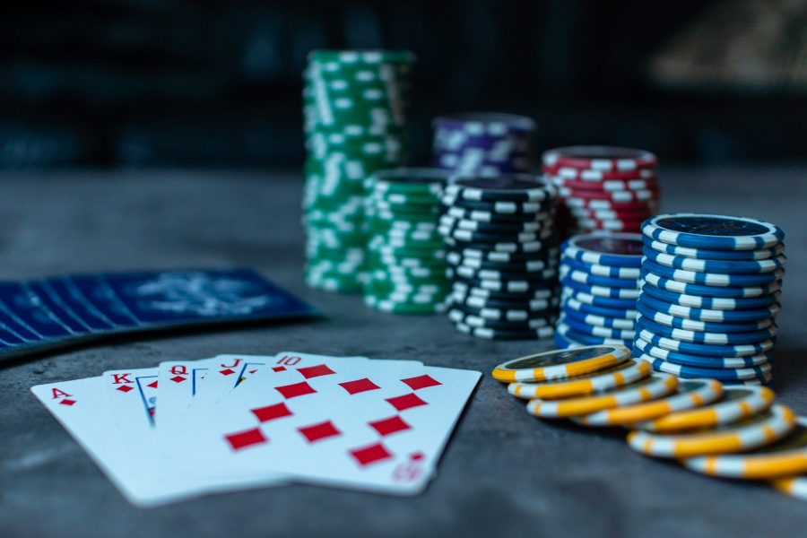
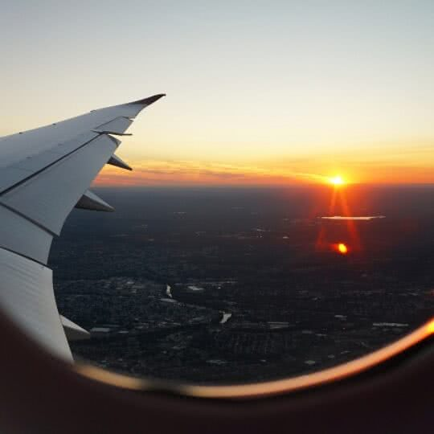

É considerado o jogo de cartas mais popular do mundo, e o mais popular entre uma classe de jogos nos quais os participantes utilizam as cartas de forma total ou parcialmente escondidas fazendo apostas para um monte central, após o resultante das apostas é atribuído ao jogador ou jogadores que possuir(em) o melhor conjunto de cartas entre os que permaneceram até o final da rodada, ou ao jogador restante caso os demais tenham desistido. Quando houver uma dupla na mão do jogador e uma dupla na mesa, essa não pode ser usado como critério de desempate em caso de uma jogada superior de outro jogador.
Exercício físico é importante para qualquer pessoa, em qualquer idade. Fazer academia não é desperdício de tempo ou de dinheiro: é um investimento que você faz para a sua própria saúde. Não tente se virar sem o suporte de um profissional! Em uma academia, profissionais altamente capacitados irão orientar você da melhor maneira e vão te deixar expert na forma correta de se praticar os exercícios indicados para o seu caso.
Se treinar sozinho vai te trazer resultados, treinar acompanhado vai ser muito melhor! Chame aquele seu amigo ou amiga que mora perto, faça um mutirão da saúde com a família e convide algum parente para te acompanhar… Nessas horas, qualquer incentivo a mais vai fazer a diferença para não deixar a gente desanimar.
Dizem que “nada se cria, tudo se copia”. Se isso é verdade a respeito de tudo e qualquer coisa, fica difícil dizer. Mas certamente uma bela inspiração está em “copiar” a vivência de uma viagem. Tudo é fonte de criatividade, especialmente porque você está vivendo um universo novo, ainda que no seu próprio país.
Em uma viagem, especialmente em férias ou ainda por um curto recesso, você se permite reativar esses sentidos e livra a sua mente de tanta preocupação. O resultado é notar que outras realidades existem e que você está aberto(a) para recebê-las. Esse choque é ainda maior quando você escolhe o turismo comunitário. Nele você é diretamente impactado pela vivência de outras pessoas.
